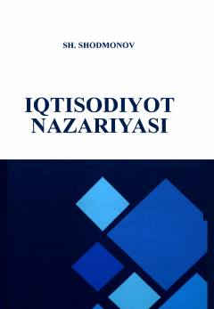

INIqtisodiyot nazariyasi fanidan oliy o'quv yurtlari uchun mo'ljallangan fundamental darslik.
Ushbu darslik iqtisodiyot nazariyasining umumiy asoslari, bozor iqtisodiyoti, makroiqtisodiyot va jahon xo'jaligi masalalarini qamrab oladi. Kitob oliy o'quv yurtlari bakalavriat talabalari uchun mo'ljallangan bo'lib, O'zbekiston iqtisodiyotidagi islohotlar va zamonaviy bozor qonuniyatlarini tahlil qiladi.